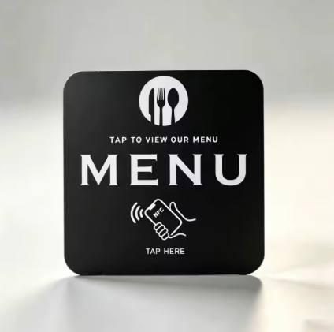
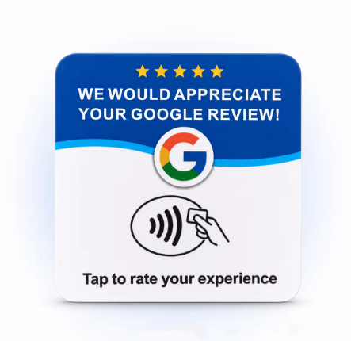
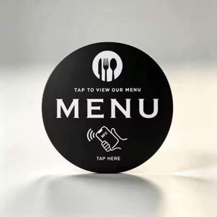
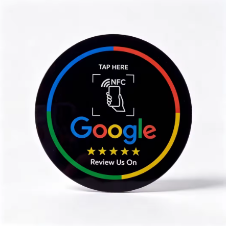

MENÙ
Menù digitale
Un tap e il cliente apre il menù online dal proprio smartphone.
Menù, recensioni Google, WhatsApp, Google Maps, Instagram e altri servizi: il cliente arriva subito dove vuoi tu.
Non vendiamo solo un tag. Creiamo una soluzione NFC pensata per la tua attività.

Questi sono alcuni esempi di supporti NFC. Possiamo configurare il collegamento in base all'obiettivo della tua attività e valutare anche soluzioni personalizzate.
Un tap e il cliente apre il menù online dal proprio smartphone.

Rendi più semplice raggiungere il profilo della tua attività e lasciare una recensione.

Una soluzione elegante per tavoli, banconi, reception e punti di servizio.

Un punto di contatto discreto e immediato per invitare il cliente alla recensione.
Un cliente vede il tag sul tavolo, avvicina lo smartphone e raggiunge immediatamente il contenuto che hai scelto.
La destinazione viene scelta in base alla tua esigenza: non devi limitarti a un solo utilizzo.
Il cliente avvicina lo smartphone al tag. Se il dispositivo supporta NFC, riconosce il collegamento e può aprirlo.
I dispositivi e le impostazioni possono variare. In alternativa, per alcune soluzioni è possibile affiancare un QR code.
Chiedi quale soluzione fa per te →Scrivici su WhatsApp e raccontaci che tipo di attività hai. Possiamo mostrarti un esempio concreto, senza impegno.